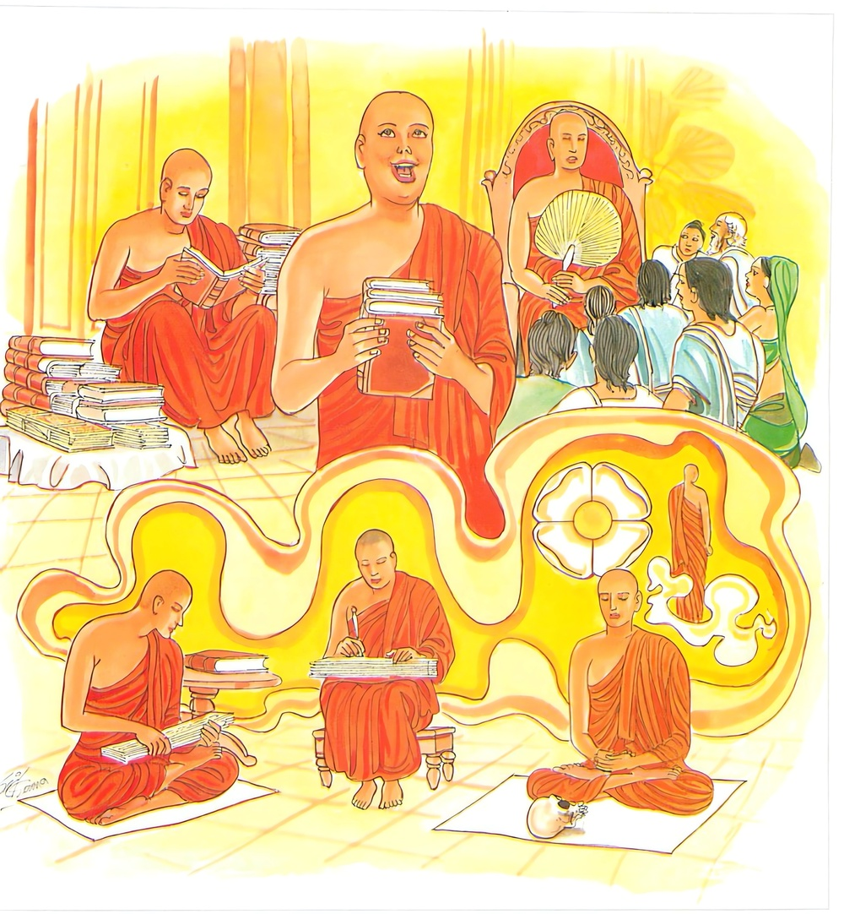

19-3 එකුදාන ස්ථවිරයන් වහන්සේ
මෙම කතාව ධම්මපද අටුවාවෙන් ද කියවන්න.
න තාවතා ධම්මධරො යාවතා බහු භාසති
යො ච අප්පම්පි සුත්වාන ධම්මං කායෙන පස්සති
ස වෙ ධම්මධරො හොති යො ධම්මං නප්පමජ්ජති.
(බණ හැදෑරීම් ආදී) යම් පමණ කාරණයෙකින් බොහෝ කොට බෙණේ ද, එ පමණෙකින් ධර්මධර නම් නො වෙයි. යමෙක් වනාහි මඳ දැයකුදු අසා (ධර්මය දැන, අර්ත්ථය දැන, ධර්මානුධර්මයට පැමිණ) නාම කයින් (දුක් ආදීන් පිරිසිඳ දත්තේ) සිවු සස්දහම් දක්නේ ද, යමෙක් වඩන ලද වැර ඇති ව (අද අද ම රහත්පල ගණිමි යි) ප්රතිවේධය කැමැති වෙමින් වෙසේ ද, ඒ මහණ තෙම ඒකාන්තයෙන් ධර්මධර නම් වෙයි.

එකුදාන ස්ථවිරයන් වහන්සේ එක් වන ලැහැබෙක වසන සේක. උන්වහන්සේට එක් ම උදානයෙක් ප්රගුණ ව තුබුනේ ය. මේ ඒ උදානය:
“තද එකඟ බැව් ඇති - නො පමා පලසමවතෙහි,
විදසුනැ ද හික්මුනු - අයිරා නැණැති එකහැටි.
.
රා ඈ දොසින් හැම - සන්හුන් වී ද ඇති ඒ,
රහතුනට නො ද වනුයේ - සෝ දුක් (කිසිත් තන්හි)”
උන්වහන්සේ පොහෝ දවස්හි තුමූ ම බණ ඇසීමට කල් දන්වා මේ උදානය කියන්නෝ ය. එවේලෙහි බණ ඇසූ දෙවියන් කරණ සාධුනාදය පොළොව ගුගුරණ හඬක් මෙන් පවත්නේ ය. එක් පොහෝ දවසෙක පන් සිය පන් සිය දෙනා පිරිවර ගත් තෙවළාදර තෙර දෙදෙනකුත් වහන්සේ ඒ එකුදාන තෙරුන් වසනා තැනට ගියහ. උන්වහන්සේ ඒ දෙන ම දැක තුටුසිත් ඇත්තාහු, “ඔබවහන්සේලා මෙහි මා වසන තැනට පැමිණීමෙන් මට කරණ ලද්දේ ඉතා යහපතෙක, අද අපි ඔබවහන්සේලා වෙතින් බණ අසමු”යි කීහ. එවිට ඒ දෙදෙනා වහන්සේ “ඇවැත්නි! බණ අසන්නෝ කවුරු දැ?”යි ඇසූහ. “ඇයි, ස්වාමීනි! එසේ අසහු? බණ අසන දවස්හි මේ වනලැහැබ දෙවියන්ගේ සාධුනාදයෙන් එක් පැහැර නිකුත් නාද ඇත්තේ වන්නේ ය”යි කී කල්හි තෙවළාදර දෙනමගෙන් එක් නමක් පෙළ කී ය. එක් නම් එහි අරුත් පැවසී ය. එහෙත් එදා එක් දෙවියෙකුත් සාධුකාර නො දුන්නේ ය. ඒ දුටු තෙවළාදර දෙදෙනා වහන්සේ “ඇවැත්නි! තමුන්නාන්සේ බණ දෙසන දවස්හි මේ වනලැහැබෙහි වසනා දෙවියෝ මහහඬින් සාධුකාර දෙති,යි කීවහු ය, කෝ ඒ සාධුකාර?”යි ඇසූහ. “ස්වාමීනි! අන් දවස්හි නම් මේ වනලැහැබ එක් පැහැර නිකුත් සාධුනාද ඇත්තේ වන්නේ ය, අද මේ කුමක් වී දැ’යි නො දනිමි”යි කී විට “ඇවැත්නි! එසේ නම් තමුන්නාන්සේ ම බණ කියවු”යි කීහ. එකුදාන ස්ථවිරයන් වහන්සේ තල්වැට ගෙණ බණ අසුන් අරා හිඳ එම ගාථාව ම කීහ. දෙවියෝ මහහඬින් සාධුකාර දුන්හ. එකල්හි ඔවුන්ගේ පිරිවර මහණෝ “මේ වනලැහැබෙහි වසන දෙවියෝ මූණ බලා සත්කාර කරන්නෝ ය. තෙවළාදර දෙන ම මෙතක් වේලා මෙතෙක් බණ කියන ලද නමුත් ඔවුනට ප්රශංසා මාත්රයකුත් නො කොට මහලු තෙරුන් එක් ම ගාථාවක් කියන්නා හා මහහඬින් සාධුකාර දෙති”යි පරිභව කොට විහාරයට ගොස් ඒ කාරණය බුදුරජානන් වහන්සේට සැළකළහ. “මහණෙනි! මම යමෙක් බොහෝ කොට බණ උගෙණ බොහෝ කොට බණ කියා ද, එහෙත් ඔහු ධර්මධර ය යි නො කියමි, යමෙක් එක් ගාථාවක් නමුත් උගෙණ සත්යය පිළිවද දනී නම් මෙතෙමේ ධර්මධර නම් වේ” යි වදාරා මේ ධර්මදේශනාව කළ සේක.
න තාවතා ධම්මධරො යාවතා බහු භාසති,
යො ච අප්පම්පි සුත්වාන ධම්මං කායෙන පස්සති,
ස වෙ ධම්මධරො හොති යො ධම්මං නප්පමජ්ජතීති.
යම් පමණෙකින් බොහෝ කොට බෙණේ ද, එපමණෙකින් ධර්මධරයෙක් නො වේ. යමෙක් වනාහි ටිකක් නමුදු බණ අසා කයින් සිවුසස් දනී ද, යමෙක් ධර්මයෙහි නො පමා වේ ද, හෙතෙමේ එකාන්තයෙන් ධර්මධර නම් වේ.
න තාවතා ධම්මධරො යාවතා බහු භාසති = යම් පමණෙකින් බොහෝ කොට බෙණේ ද, එපමණෙකින් ධර්මධරයෙක් නො වේ.
යමෙක් වනාහි පාඩම් කිරීම් පාඩම් කීම් ඈ විසින්, අන්හට බණදෙසීම් ඈ විසින් දව රෑ දෙක්හි අතර නො තබා ම බොහෝ කොට කියා ද, එපමණෙකින් හෙතෙමේ ධර්මධරයෙක් නො වේ. යටත් පිරිසයින් වංශය රක්නෙක් ප්රවෙණිය රක්නකේ ද නො වේ.
ධර්මය දරණුයේ ධර්මධර නමි. මෙහි ධර්මැ යි කීයේ හුදෙක් පර්ය්යාප්ති ධර්මය ම නො වේ. ප්රතිවේධධර්මය ද එයින් ගැණේ. ඒ හා ම ප්රතිපත්තිධර්මය ද කියැවෙන්නේ ය. එහෙයින් ධර්මධර නම්, පර්ය්යාප්ති - ප්රතිපත්ති - ප්රතිවේධධර්ම දරන්නේ ය. “ධම්මධරාති පරියත්තිධම්මානං ච පටිවෙධධම්මානං ච ධාරණතො ධම්මධරා පටිපත්තිධම්මො ච එත්ථෙව සඞ්ගහං ගච්ඡති” යනු අටුවා.
තාවතා, යාවතා යනු නිපාතයෝ ය. එහි ‘තාවතා’ යනු නියමයෙන් පිරිසිඳීමෙහි ය. ‘යාවතා’ අනියමින් පිරිසිඳීමෙහි ය. “තාවතා නියමත්ථපරිච්ඡෙදෙ ච යාවත අනියමත්ථපරිච්ඡෙදෙ ච වත්තතෙ” යනු ශාබ්දිකවචනයි.
යො ච අප්පං අපි සුත්වාන ධම්මං කායෙන පස්සති = යමෙක් වනාහි ටිකක් නමුත් බණ අසා කයින් සිවුසස් දහම් දක්නේ ද.
“යො පන අප්පමත්තකම්පි සුත්වා ධම්මමන්ථාය ධම්මානුධම්මපටිපන්නො හුත්වා නාමකායෙන දුක්ඛාදීනි පරිජානන්තො චතුසච්චධම්මං පස්සති” යනු අටුවා. යමෙක් වනාහි ටිකක් නමුත් අසා පාලිධර්මය හා එහි අර්ත්ථකථාව දැන නව ලොවුතුරු දහම් ලැබීමට කරුණු වූ ශීලවිශුද්ධි ආදී වූ පූර්වභාග ප්රතිපදාවට පිළිපන්නේ නාමකයින් දුඃඛාදීන් පිරිසිඳ දක්නේ වේ ද, යනු අරුත්.
මෙහි ධම්මං යනු සිවුසස් දහම් ය. කායෙන යන්නෙන් චිත්තචෛතසිකධර්ම කියැ වේ. පස්සති යනු නුවණින් දකියි යනු අරුත්. මසැසින් දකි, යි යනු නො යෙදේ.
“සො වෙ ධම්මධරො හොති යො ධම්මං න පමජ්ජති” = යමෙක් සිවුසස් දහම් දැනීමෙහි පමා නො වේ ද, හෙතෙමේ එකාන්තයෙන් ධර්මධර වේ.
යමෙක් ටිකක් නමුත් බණ අසා කයින් සිවුසස් දහම් දක්නේ වේ ද, එසේ යමෙක් පිරිපුන් වැර ඇති ව ‘අද ම රහත් වෙමි’ යි ප්රතිවේධය බලාපොරොත්තුවෙමින් වෙසේ ද හෙතෙමේ එකාන්තයෙන් ‘ධර්මධර’ නම් වේ.
“යොපි ආරද්ධවිරියෝ හුත්වා අජ්ජ අජ්ජෙවාති පටිවෙධං ආකඞ්ඛන්තො ධම්මං නප්පමජ්ජති, අයම්පි ධම්මධරොයෙවාති අත්ථො” යනු අටුවා.
ධර්මදේශනාවගේ අවසානයෙහි බොහෝ දෙන සෝවන්ඵලාදියට පැමිණියාහු ය.
එකොදානක්ෂීණාස්රව වස්තුව නිමි.